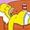

De: La Frikipedia, la enciclopedia extremadamente seria.
De: La Frikipedia, la enciclopedia extremadamente seria. De: La Frikipedia, la enciclopedia extremadamente seria.

|
FRIKIPEDIA QUIERE QUE ESTA DEFINICIÓN
PASE A SER UN ARTÍCULO FRIKIPÉDICO La información contenida en este artículo es una mínima parte de su jugo total, así que ponte los guantes, saca el tupperwere y empieza a exprimir el tema. Si lo haces serás recompensado con una galleta en almíbar y algo más. |
| De la serie artes del mundo: | |||
| Flameado de Moe | |||
| |||
| Se practica desde... | Que Homer se equivoco | ||
| Practicantes típicos | Moe | ||
| Técnicas básicas | Quemar | ||
| Público objetivo | Quemar | ||
| Dificultad | mucha si eres torpe | ||
| Nivel de frikismo | 56% | ||
| Máximo exponente | Moe | ||
Pizarra con Bart: "La ropa interior debe llevarse por dentro... La ropa interior debe llevarse por dentro..." (bis x24)
El Flameado de Moe (Mejor conocido en Latino América como "Llamarada Moe") es una bebida espirituosa que se obtiene de la mezcla de varios licores, semen de bue y jarabe para la tos marca Krusty (debe ser de color morado). Después se le pega un fogonazo, y ya se puede beber. Opcional apagar la llama.
Según la gente que lo ha probado Moe: "Es como si celebrase una fiesta en mi boca y todo el mundo estuviese invitado".
Moe Szyslak: "Moe!! Flameado de Moe! Se llama flameado de Moe! Yo me llamo Moe! Como yo lo he inventado se llama flameado de Moe! Qué, tu qué miras Homer? FLAMEADO de Moe!"

|
PACO!! Esta sección o apartado del artículo es muy mala, por favor mejórala para que este artículo sea la caña. |
(Este fragmento no tiene nada que ver con el Flameado de Moe)
|  The Simpsons |
|---|
| Personajes |
| Homer · Marge · Bart · Lisa · Maggie |
| Apu | Cletus | Comedido | Disco Stu | Dr. Nick Riviera | Duffman | Hank Scorpio | Hans Topo | La loca de los gatos | Lionel Hutz | Milhouse | Moe | Ned Flanders | Nelson Muntz | Profesor Frink | Ralph Wiggum | Señor Burns | Seymour Skinner | Spidercerdo |
| Otros |
| Barra Inanimada de Cabrono | Cerveza Duff | Flameado de Moe | Frases célebres de Homer | Frinkaedro | Homerianismo | Las mejores frases de Bart Simpson | Patetismo | Springfield | Taberna de Moe |
Autor(es):